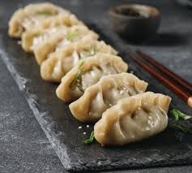

Gyozas
Home Page

Descripcion
Ingredientes
- Obleas para gyozas 24
- Aceite de girasol 15
- Repollo hoja 1
- Cebolleta 2
- Setas shiitake frescas 2
- Diente de ajo 1
- Jengibre fresco rallado, 1 cucharadita
- Carne picada de cerdo 350 g
- Vino blanco 15 ml
- Aceite de sesamo 15 ml
- Salsa de soja 15 ml
- Sal
- Pimienta negra molida
- Salsa de soja para la salsa 30 ml
- Vinagre de arroz para la salsa 30 ml